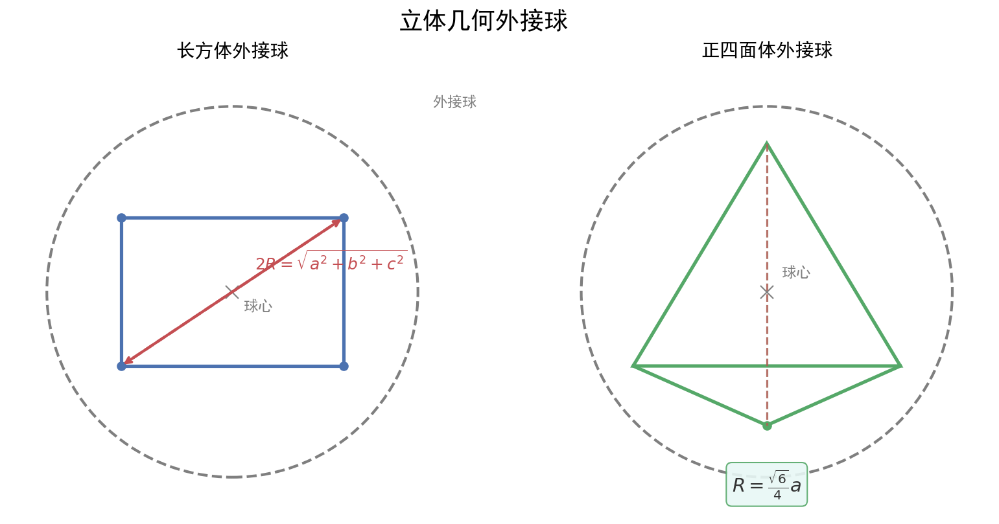

核心内容
本质理解：表面积是"各面面积之和"，体积是"空间占据大小"。核心思想：分解法（将复杂体分解为简单体）和等积变换（换底换高求体积）。
一、多面体（柱、锥）
1. 棱柱（以直棱柱为例）
| 项目 | 公式 | 说明 |
|---|---|---|
| 侧面积 | $S_{侧} = C_{底} \cdot h$（$C_{底}$为底面周长） | 侧面展开为矩形 |
| 表面积 | $S_{表} = S_{侧} + 2S_{底}$ | 上下底+侧面 |
| 体积 | $V = S_{底} \cdot h$ | 底面积×高 |
2. 棱锥（以正棱锥为例）
| 项目 | 公式 | 说明 |
|---|---|---|
| 侧面积 | $S_{侧} = \frac{1}{2}C_{底} \cdot h'$（$h'$为斜高） | 侧面展开为全等三角形 |
| 表面积 | $S_{表} = S_{侧} + S_{底}$ | 底+侧面 |
| 体积 | $V = \frac{1}{3}S_{底} \cdot h$ | 等底等高时，锥体体积是柱体的1/3 |
关键记忆：锥体体积$\frac{1}{3}$的系数，来源于积分或祖暅原理。
二、旋转体（圆柱、圆锥、圆台、球）—— 广东卷重点
1. 圆柱
| 项目 | 公式 | 说明 |
|---|---|---|
| 侧面积 | $S_{侧} = 2\pi r \cdot l = 2\pi r h$ | 侧面展开为矩形，长=底面周长，宽=母线长 |
| 表面积 | $S_{表} = 2\pi r^2 + 2\pi r h$ | 两个底+侧面 |
| 体积 | $V = \pi r^2 h$ | 底圆面积×高 |
2. 圆锥
| 项目 | 公式 | 说明 |
|---|---|---|
| 侧面积 | $S_{侧} = \pi r \cdot l$ | 侧面展开为扇形，半径=母线$l$，弧长=底面周长$2\pi r$ |
| 表面积 | $S_{表} = \pi r^2 + \pi r l$ | 底+侧面 |
| 体积 | $V = \frac{1}{3}\pi r^2 h$ | 注意：$h$是锥高，不是母线$l$ |
| 核心关系 | $l^2 = r^2 + h^2$ | 母线、半径、锥高构成直角三角形 |
展开图关键：圆锥侧面展开扇形的圆心角$\theta = \frac{r}{l} \times 360° = \frac{2\pi r}{l}$（弧度制$\frac{2\pi r}{l}$）
3. 圆台（广东卷高频！）
| 项目 | 公式 | 说明 |
|---|---|---|
| 侧面积 | $S_{侧} = \pi(r_1 + r_2) \cdot l$ | 侧面展开为扇环 |
| 表面积 | $S_{表} = \pi(r_1^2 + r_2^2) + \pi(r_1+r_2)l$ | 上下底+侧面 |
| 体积 | $V = \frac{1}{3}\pi h(r_1^2 + r_1r_2 + r_2^2)$ | 注意中间项$r_1r_2$！ |
| 核心关系 | $l^2 = h^2 + (r_1-r_2)^2$ | 母线、高、半径差构成直角三角形 |
圆台体积记忆：$\frac{1}{3}h(S_{上} + \sqrt{S_{上}S_{下}} + S_{下})$，其中$\sqrt{S_{上}S_{下}}$是等比中项。
4. 球（广东卷常考组合体！）
| 项目 | 公式 | 说明 |
|---|---|---|
| 表面积 | $S = 4\pi R^2$ | 等于大圆面积的4倍 |
| 体积 | $V = \frac{4}{3}\pi R^3$ | 系数$\frac{4}{3}$ |
球的截面：球心到截面距离$d$，截面半径$r$，则$r^2 + d^2 = R^2$。
三、组合体与等积法
1. 组合体处理策略
| 类型 | 处理方法 | 示例 |
|---|---|---|
| 拼接体 | 体积相加，表面积注意重叠面 | 正方体+半球 |
| 挖去体 | 体积相减，表面积增加内壁 | 正方体挖去圆柱 |
| 外接球 | 找几何体中心对称点，$R$为到顶点距离 | 正方体外接球$R = \frac{\sqrt{3}}{2}a$ |
| 内切球 | 找与所有面/棱相切的球 | 正方体内切球$R = \frac{a}{2}$ |
2024-2025广州越秀区期末第14题：圆锥内切球问题，利用轴截面三角形+内切圆半径公式。
2. 等积法（换底换高求体积）
原理：$V = \frac{1}{3}S_{底} \cdot h = \frac{1}{3}S_{另一底} \cdot h'$
当直接求某锥体的高困难时，换一个底面，使高容易求。
典型应用：三棱锥$P-ABC$中，若$PA \perp$底面$ABC$，则$V = \frac{1}{3}S_{\triangle ABC} \cdot PA$；若$BC \perp$面$PAB$，则$V = \frac{1}{3}S_{\triangle PAB} \cdot BC$。
四、高频陷阱与公式记忆表
| 陷阱 | 正确做法 | 常见错误 |
|---|---|---|
| 混淆母线与高 | 圆锥中$l$是母线，$h$是高，$l^2 = r^2 + h^2$ | 误把母线当高代入体积公式 |
| 圆台体积漏中项 | $V = \frac{1}{3}\pi h(r_1^2 + r_1r_2 + r_2^2)$ | 漏写$r_1r_2$项 |
| 表面积vs侧面积 | 审题区分"表面积"（含底）和"侧面积"（不含底） | 求表面积时忘加底面积 |
| 单位换算 | 统一单位后再计算 | 厘米与米混用 |
| 球的直径当半径 | 题目给直径$d$，先转半径$R = d/2$ | 直接用$d$代入$R$的公式 |
五、记忆口诀
公式口诀：
- "柱体体积底乘高，锥体体积三分之一"
- "圆柱侧面矩形长，圆锥侧面扇形弧"
- "圆台体积三兄弟，上下平方加乘积"
- "球表四倍大圆面，球体积三分之四派立方"
- "母线高，勾股连，圆锥圆台别搞混"
题型识别标志
看到什么条件 → 立刻想到什么方法
| 题干关键条件 | 识别为 | 首选方法 |
|---|---|---|
| 旋转体（圆柱/圆锥/圆台）求表面积、体积 | 套公式 | 注意母线 $l$ 与高 $h$ 的区别 |
| 侧面展开图（扇形/扇环） | 展开关系 | 弧长 $=$ 底面周长，圆心角 $\theta=\frac{2\pi r}{l}$ |
| 组合体（切去/拼接） | 体积加减 | 体积相加减，表面积注意重叠面 |
| 外接球/内切球 | 对称模型 | 找对称中心，$R$ 为到顶点或切点的距离 |
| 锥体未知高求体积 | 等积法 | 换底面使高易求：$V=\frac13 S\cdot h$ |
| 题干"轴截面" | 轴截面分析 | 用轴截面三角形/梯形转化平面问题 |
解题路径（旋转体与展开五步法）
第一步：识图定型
判断柱、锥、台、球还是组合体；旋转体重点区分母线 $l$ 与高 $h$。
第二步：提取已知量
底面半径 $r$、高 $h$、母线 $l$、侧面展开圆心角等。
第三步：建立关系式
展开图：扇形弧长 $=$ 底面周长，即 $\pi l=2\pi r$（半圆展开）；圆台 $l^2=h^2+(r_1-r_2)^2$。
第四步：代入公式计算
圆锥 $V=\frac13\pi r^2h$，$S_{表}=\pi r^2+\pi r l$ 等。
第五步：校验单位与量
统一单位；确认求表面积还是侧面积；球的直径先转半径。
易错提醒：误把母线当高代入体积公式；圆台体积漏写中项 $r_1r_2$；表面积与侧面积混淆。
母题（2021 新课标Ⅰ卷·第3题，5分）
题目：已知圆锥的底面半径为 $\sqrt{2}$，其侧面展开图为一个半圆，则该圆锥的母线长为（ ） A. $2$ B. $2\sqrt{2}$ C. $4$ D. $4\sqrt{2}$
解答： 设圆锥母线长为 $l$，底面半径 $r=\sqrt{2}$。 底面周长：$2\pi r=2\pi\sqrt{2}$。 侧面展开为半圆，其弧长等于底面周长： $$\pi l=2\pi\sqrt{2}\quad\Rightarrow\quad l=2\sqrt{2}.$$ 故选 B。
关联卡片
- 高一筑基_数学_核心知识网络_空间点线面位置关系 — 空间几何体的结构基础（点线面关系）
- 高一筑基_数学_典型题型与方法_立体几何证明题标准步骤 — 证明题中常结合体积计算
- 高一筑基_数学_易错警示与辨析_立体几何证明与计算失误高发区 — 表面积与体积计算的常见错误
备注
- 广东高一下期末命题规律：旋转体（圆柱、圆锥、圆台）的考查频率高于多面体，尤其是圆台的侧面展开图和体积公式、圆锥的内切球/外接球、组合体的表面积是三大热点。
- 2024-2025学年广州番禺区期末第3题：圆台侧面展开图，已知上下底半径和母线，求展开扇环的圆心角。这是广东卷对"旋转体展开"的典型考查。
- 训练建议：先默写所有公式（每天1遍），再做10道基础计算题，重点练圆台和球的组合体。
- 高考衔接：新高考Ⅰ卷中立体几何大题（第17-18题）的第2问常考查空间角或体积，高一下打好基础，高二学空间向量后直接建系。
🏷️ 标签：
#数学#核心知识网络#高一筑基#难度3#立体几何#圆柱#圆锥#圆台#球#表面积#体积#组合体#广东名校模拟